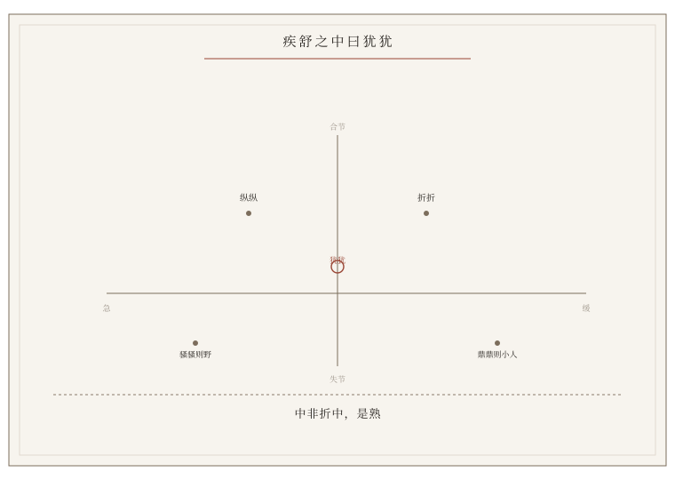

檀弓上 · 三·六十九 · 第 272 课
喪事欲其縱縱爾，吉事欲其折折爾。故喪事雖遽不陵節，吉事雖止不怠。故騷騷爾則野，鼎鼎爾則小人，君子蓋猶猶爾。
说什么事：丧事要快而不乱，吉事要缓而不慢。太快就成了「野」，太慢就成了「小人」，君子取其中：犹犹。
落在哪一层：礼，兼及礼数与礼意。论「疾舒之中」。
为何编在此位：上节论礼之空白，此节论礼之节度。空白处须商量，节度处有中。
【经】喪事欲其縱縱爾，吉事欲其折折爾。故喪事雖遽不陵節，吉事雖止不怠。故騷騷爾則野，鼎鼎爾則小人，君子蓋猶猶爾。
【注】纵纵，趋事貌；纵读如「总领」之总。折折，安舒貌，《诗》云「好人提提」。陵，躐也；止，立俟事时也；怠，惰也。骚骚，谓大疾。鼎鼎，谓大舒。疾舒之中。
【疏】所引者《魏风·葛屦》之诗也：魏俗褊薄，遣新来妇人缝作衣裳，故述而刺之云「美好妇人，初来之时提提然」，引之者证安舒之意。「丧事虽须促遽，亦当有常，不得陵越丧礼之节」；「吉事虽有行止住之时，不得怠堕宽慢」。故丧事骚骚尔、过为急疾，则如田野之人，急切无礼；若吉事鼎鼎尔、不自严敬，则如小人然，形体宽慢也。若君子之人，于丧事之内得疾之中，于吉事之内得舒之中；盖行礼之时，明闲法，则志意犹犹然——犹犹是晓达之貌。
纵纵 趋事之貌。读如「总领」之总。急而有序。
折折 安舒之貌。注引《诗》「好人提提」。
遽 急。
陵节 越过节次。陵，躐。
止 立而待事之时。
怠 惰。
骚骚 大疾，过急。
鼎鼎 大舒，过缓。
犹犹 疾舒之中。疏「晓达之貌」。
野 如田野之人，无礼。
小人 形体宽慢，不自严敬。
丧事要办得紧凑，吉事要办得从容。所以丧事虽急，不可越过节次；吉事虽有停顿等待，不可懈怠。急得过分就像野人，缓得过分就像小人。君子呢，是「犹犹」——刚刚好。
一节六个叠字，四态一中。
纵纵与折折是正：丧事趋事，吉事安舒。此二者皆「有常」——快而不越节，缓而不怠。
骚骚与鼎鼎是过：骚骚是「大疾」，急到如田野之人，急切无礼；鼎鼎是「大舒」，缓到如小人，形体宽慢、不自严敬。
犹犹是「中」。疏解为「晓达之貌」：不是不快不慢的折中，是「明闲于法」之后的从容。这一层最要紧——中不是算出来的平均，是懂了之后的自然。
第一层 丧吉两副节奏 丧事主急，吉事主舒。这不是偏好，是事之性质：丧有急迫之事（殓、殡、葬皆有日），吉有等待之时（祭有先后、宾有进退）。礼之节奏，随事而生。
第二层 「虽遽不陵节」 四字是全节的硬处。急的时候最容易做的就是「越过节次」：丧事从简，省了该省之外的；办事图快，跳了该走的程序。此句把「快」与「越」分开：可以快，不可以越。
第三层 「虽止不怠」 吉事多停顿——等宾、等牲、等时。停顿的时候最容易懈怠：站姿松、神色散。此句把「等」与「怠」分开：可以等，不可以散。
第四层 犹犹 疏「晓达之貌」。此解极高：中人以上，行礼时心里明白这套法度，故不急不缓皆合。不懂的人，只能在「骚骚」与「鼎鼎」之间来回：一着急就野，一放松就慢。故「犹犹」不是性情，是学问。
与今日何干 一件事赶时间时，最容易省掉的是「仪式性的那一步」；一件事等人时，最容易散掉的是「在等的姿态」。此节给的尺是：快而不越节，等而不失敬。而做到这一点的，不是修养好，是熟。
| 左 | 右 |
|---|---|
| 丧事纵纵 | 趋事，急而有序 |
| 吉事折折 | 安舒，缓而有序 |
| 虽遽不陵节 | 快不越节 |
| 虽止不怠 | 等不失敬 |
| 骚骚则野 | 过急 |
| 鼎鼎则小人 | 过缓 |
| 犹犹 | 疾舒之中 |
| 晓达之貌 | 中非折中，是熟 |
画一处丧次与一处祭所并置的院落，视点略俯。左半是丧次：几人抬物疾行、脚步紧凑、衣裾扬起，队形不乱；右半是祭所：数人列立不动、拱手垂目、几上牲器齐整。两处之间一条石道。不写文字、不画人面细节。赭色只用在丧次中一人脚下的急步印与祭所几上一只鼎的耳。
